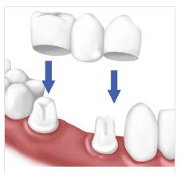

Crowns & Bridges
- 
Dental Crown
A crown (often called a cap) is an artificial cover that restores a decayed or damaged tooth to its original shape and size. It is used for protecting the surface of a tooth that is cracked or broken.
Crown is used to protect a tooth that has undergone root canal treatment, to protect teeth with large fillings, to correct a cosmetic problem, to correct a bite problem, to replace existing broken or poor fitting crowns.
Dental Bridge
A Dental Bridge is basically a number of crowns connected together. A Bridge can replace one or more missing teeth. In this procedure, support is taken from one/more adjacent teeth. It is a universally accepted technique because it is simple, painless, and economical.
It requires minimum sittings. A dental bridge is a fixed solution for missing teeth.
The types crowns/bridges we provide are:
1:All metal:
They are the strongest and most durable crowns available. But, shade of the teeth cannot be matched. Thus, they are used for posterior teeth. They can be used when the space available for crown placement is minimum.
2: Porcelain (ceramic) fused to metal:
This type of crown involves a metal layer to which porcelain is fused. So, the required shade can be achieved.They are highly durable. They can be used for anterior as well as posterior teeth.
3: Zirconium (metal free) :
They are highly aesthetic , metal free , biocompatible, extremely tough and long lasting. They can be used for anterior as well as posterior teeth. At Our Clinic , we import this material from USA.
Dental Crowns and Bridges at Our Clinic:
-Free replacement Warranty of 3 , 5 and 10 years is offered with Warranty cards.
-We have our own in-house digital dental lab since 22 years, catering to our clinics only.
-No more physical impressions for crown preparation.
-Temporary crowns are given immediately when needed , specifically in anterior region.
-We use an Intra-oral Scanner, that scans the tooth/teeth and the surrounding tissues and records the data digitally. It is just like clicking pictures intra-orally.
-The Intra-oral Scanner records the exact bite as well. Thus, helping to re-create the natural and ideal function of the tooth/teeth.